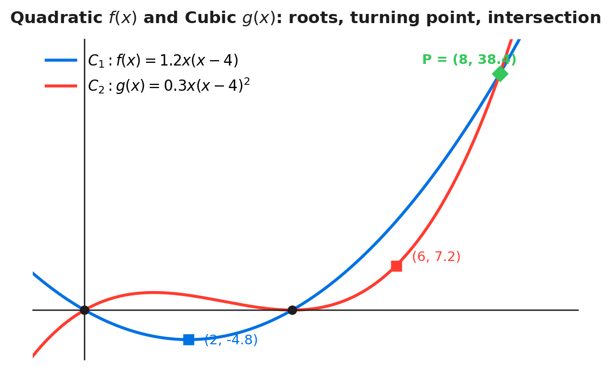

The curves $C_1$ and $C_2$ meet in the first quadrant at the point P, shown in Figure 1.
Use algebra to find the coordinates of P, given $f(x) = 1.2x(x-4)$ and $g(x) = \frac{3}{10}x(x-4)^2$.

[4 marks]
Set the two curves equal.
$$1.2x(x-4) = 0.3x(x-4)^2$$
Move everything to one side.
$$1.2x(x-4) - 0.3x(x-4)^2 = 0$$
Factor out the common factor $x(x-4)$.
$$x(x-4)\bigl[1.2 - 0.3(x-4)\bigr] = 0$$
Solve each factor.
Select the correct solution.
P is in the first quadrant and is NOT the origin ($x=0$) or the x-axis meeting ($x=4$).
So $x = 8$.
Find $y$ using $f(x)$:
$$y = f(8) = 1.2 \cdot 8 \cdot (8-4) = 1.2 \cdot 8 \cdot 4 = 38.4$$
Verify using $g(x)$:
$$g(8) = 0.3 \cdot 8 \cdot (8-4)^2 = 0.3 \cdot 8 \cdot 16 = 38.4 \;\checkmark$$
$$\boxed{P = (8,\; 38.4)}$$